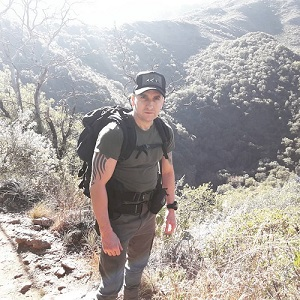

QUIENES SOMOS
TALBO LOBO
 Instructor de SUPERVIVENCIA y Guía de Montaña.
Técnico en Supervivencia.
Técnica en rescate en distintas topografías.
Fundador e Instructor del G.E.S.M.
GRUPO EXPEDICION SUPERVIVENCIA MONTAÑA.
Ya hace varios años, dictamos Cursos de distintos niveles de SUPERVIVENCIA.
1er Nivel, 2do Nivel y 3er Nivel.
Curso táctico de SUPERVIVENCIA.
Curso de SUPERVIVENCIA primitiva.
Técnico en Bushcraft.
Parte de mi formación:
Scout (Guía de Patrulla).
Ex Bombero Voluntario, Capilla del Monte, CORDOBA. ARGENTINA.
Cursos de Supervivencia dictados por distintas Fuerzas de la Provincia de Córdoba.
CURSOS DE PRIMEROS AUXILIOS.
Curso de radio comunicación.
Miembro del Grupo Especial BRIGADA NARANJA.
Dentro de la provincia de Córdoba se forma un grupo de elite llamado "BRIGADA NARANJA", solo muy pocos bomberos lo integran.
Cada Cuartel de la provincia de Córdoba, Integrante de la Brigada Naranja, elegía a los mejores bomberos, los cuales fuimos convocados a distintas catástrofes dentro y fuera del país.
Desde 1985, Primer Guía de Capilla del Monte, Córdoba, Argentina.
Así se iniciaron en Capilla del Monte las caminatas guiadas.
Primer Guía de Montaña en la Zona del Valle de Punilla, Córdoba, Argentina.
1991 hasta 1997 - Formo parte DEL GRUPO PER (Personal Especializado en Rescate de Montaña).
2018 FORMO UN GRUPO DE EXPEDICION Y SUPERVIVENCIA EN MONTAÑA (G.E.S.M - GRUPO EXDICION SUPERVIVENCIA MONTAÑA).
INSTRUCTOR DE SUPERVIVENCIA.
1ER NIVEL / 2DO NIVEL / 3ER NIVEL.
NIVEL EXTREMO DE SUPERVIVENCIA.